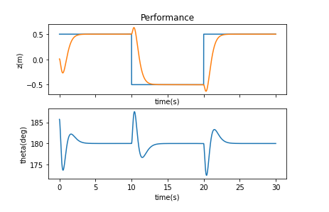
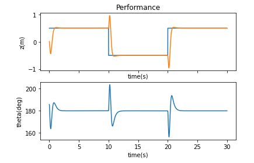
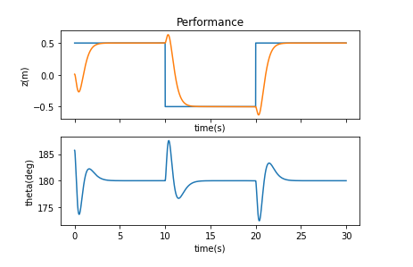
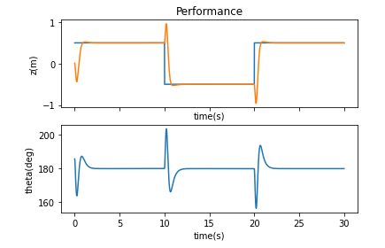

Fast Robots: ECE 4960 Lab 11
Objective
The purpose of this lab is to familiarize with linear controllers, LQR control, and their cost functions. The goal is to make the robot perform full speed wall following along an interior corner. In this lab, I will focus on measuring the characteristics of the robot to find an A and a B matrix to describe the dynamics of the system. I will also find the proportion between the motor value and the force. Last, I will develop an LQR controller and analyze the performance.Robot’s characteristics
To achieve the goal, I configured the robot to make the TOF sensor pointing forward, a proximity sensor elevating over the wheels and pointing sideways. The IMU sensor was at the top of the robot. The outlook of the robot is shown in Figure 1.Figure 1. The outlook of the robot.
Since the robot would be operated at a full speed, I tested the proximity sensor again to understand its capabilities. I found that the elapsed time for the measurement was about 0.1 seconds when I set the sensor at the mode “Integration 4” (proximitySensor.setProxIntegrationTime(4);) Then, I found the maximum distance the sensor could measure was 17.78 centimeters and the minimum distance was 9.2 centimeters. Therefore, the set-point value I picked was 11.8 centimeters.
Next, I wrote a function that was able to cover the force that was computed from the LQR controller into the motor value between [0,254]. So, I made the robot move at each speed for 0.2 seconds and collected the distance. The result is shown in Figure 2.
Figure 2. Distance versus motor value.
I assumed the motion was a constant acceleration, so I can find the acceleration by taking the distance into the equationdis = 0.5 * acc * t^2. The result is shown in Figure 3.
Figure 3. Force versus motor value.
To find the fit curve line of the result, I used the Matlab fit function to find a polynomial curve with force = f(motor) equation. The result is shown in Figure 4. However, the input should be the force instead of the motor value, so I reversed the polynomial equation and the new curve is shown in Figure 5 with a new curve equation: motor = f(force).Figure 4. The polynomial curve of force = f(motor) and the curve’s equation.
Figure 5. The polynomial curve of motor = f(force) and the curve’s equation.
Once I got the proportion between the motor value and the force, I completed a force-to-motor function that shows in Figure 6.Figure 6. The force-to-motor function.
After that, I had to figure out how to describe the robot system in state-space to apply the LQR controller. I made several assumptions about the system. First, the only input was the torque around the robot axis. Next, the robot velocity was always close to the upper limit (254 for the left motor and 240 for the right motor). So, the state space would be [distance from the wall, d; the orientation of the robot, theta; the angular velocity of the robot, thetadot], where theta-dot is included because the robot has momentum. Then, I created the situation the robot would work in and plotted the data of angle, angular velocity, proximity distance, and motor value, which shows in Figure 7.Figure 7. The step-response of the robot.
Find the A and B matrix
According to the lecture equation that is shown in Figure 8, I needed to find the drag coefficient and the rising time of the theta-dot, so I zoomed the theta and theta-dot at the time between 0.6 and 1.3 seconds shows in Figure 9. Then, I used the fit curve equation to calculate the rising time which was 0.48 and I also used the Matlab “stepinfo” function to get the rising time which was 0.6272, so I decided to take the average between these two values which was about 0.5536 seconds. Then, I just followed the equation and got the I which was -0.5174. The drag coefficient was the maximum peak value of the theta-dot, which was -2.1522. The maximum speed of the robot was 254 for the left motor and 240 for the right motor. Besides, the sampling rate is 0.1 seconds per data, so the Ts was 10 data/sec.Figure 8. The factor d and I equation from lecture slide 18 page 25.
Figure 9. The zooming data of the theta and theta-dot.
Once I completed the A and B matrix that shows in Figure 10, I started testing the LQR on Matlab to find a proper gain, K. However, I have no idea where I should start, so I decided to try the control on the simulator to understand its performance.Figure 10. The A and B matrix. (Note:After I finished all the experiments, I realized that I put V as the motor value in the matrix instead of the real speed, but the LQR will finally cancel the unit out, so I did not re-do the testing.)
Kr and LQR controller in the simulator
At first, I ran the system in the simulator without any control to observe the nonlinear dynamics that show in Figure 11. To be more specific, I used Matlab to find the eigenvalues of a square matrix A and the result was [0; -3.0368; -1.5095; 2.9042] which contains a positive value, so it was an unstable system. Then, I used the commandrank(ctrb(A,B)) to find the rank of the controllability of the matrix, which was 4, so I can now add a controller to make the system become controllable.
Figure 11. The nonlinear dynamics system.
I tried to use a Kr controller with different pole/eigenvalue placements, and the results are shown in Table 1. The performances are shown in Figure 12. I realized that the system has four factors in its steady-state, which were z, z-dot, theta, and theta-dot. If the gain has a larger value in z and z-dot, the cart will move much faster. If the gain has a larger value in theta and theta-dot, the swing angle of the pendulum will be larger. Besides, the system will break when the p =[-7.1;-7.2;-7.3;-7.4] where the gain theta was larger than the 360.Table 1. The result of different pole/eigenvalue placements.
  
 Figure 12. The performance of different pole/eigenvalue placements (the same order of the table).
Then, I tried to test LQR K-gains and used the Q = I and R = 0.5. The result is shown in Figure 13 (top). When I increased the R to 10, the cart moved much slower because the robot was not allowed to spend lots of input. The result is shown in Figure 13 (bottom). I tried to used different Q values but the performance did not change much. From the lecture, I understood that the Q defines the weight on the state and the R defines the control energy of the robot. So, if I chose a large value for R, the robot will try to stabilize with less energy. If I chose a large value for Q, the robot will try to stabilize the system with the least possible changes in the states.Figure 13. The LQR K-gains with Q = I and R = 0.5. (top) The LQR K-gains with Q = I and R = 10. (bottom)
LQR controller on the real robot
After I became familiar with the LQR controller, I then ran the rank(ctrb(A, B) on my real robot, which gives me rank 3, so the robot should be controllable. I tried different values for Q and R and observed the eigenvectors of the equation (A-B*K) on Matlab. Since I wanted to pay more attention to the distance from the wall and the robot’s angular velocity, the eigenvectors should be more negative on these two parameters, so the final Q and R I selected was diag(1,1000,1000) and 10 respectively. The gain was [-0.3162, -45.6004, -10.1695] and the statistics are shown in Figure 14.
Figure 14. The statistics of the LQR controller.
After I got the gain of the LQR controller, I wrote a function to calculate the force by taking the difference between the current state and the desired state and multiplying it with the gain. The code is shown in Figure 15.Figure 15. The force to the motor value program.
I implemented the LQR controller and operated the robot. The result is shown in Figure 16.Figure 16. The result with the LQR controller.
Video 1. The robot performance with the LQR controller.
The controller gave me a result that was similar to Dr. Petersen’s result. The LQR controller was able to balance the robot’s motion and respond quickly to make it stable and it regulated the theta-dot normally to zero. However, the theta and the distance did not become zero because it was related to the penalize value of the gain from the controller. Then, I tried to penalize proximity highest, so the Q value will be diag(1000,1,1) and the gain became [-10,-300.4197, -15.614]. The last two values would become larger instead of being smaller. The reason was that the theta should be higher in order to make the robot get a larger distance from the wall. I believed that the Kalman Filter could help if I am going to measure the proximity data without considering the theta and theta-dot, the filter will find the value of the theta and try to make it to zero. The Kalman filter will be useful to estimate the variables based on a single measurement alone for each timeframe, which I will try to implement the filter on the robot in the next lab.